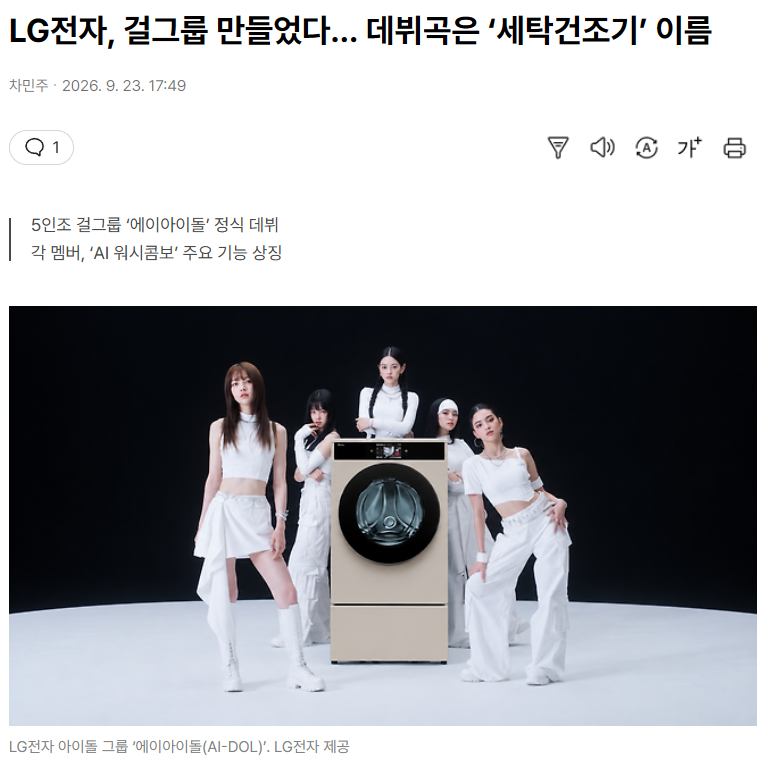

LG전자가 직접 기획·제작한 5인조 걸그룹 ‘에이아이돌(AI-DOL)’이 음악방송 무대에 오르며 본격적인 활동에 나섰다. 새로운 방식의 세탁건조기 마케팅으로, 데뷔곡 역시 LG전자 올인원 세탁건조기 ‘AI 워시콤보’에서 이름을 딴 ‘아이 워시(I WASH)’다.
LG전자는 에이아이돌이 지난 17일과 19일 각각 Mnet ‘엠카운트다운’과 MBC ‘쇼! 음악중심’에 출연했다고 23일 밝혔다. 오는 29일에는 ENA ‘케이팝업 차트쇼’에도 출연할 예정이다. 데뷔곡 아이 워시는 22일부터 50여개 음원·SNS 플랫폼에서 공개됐다. 다음달에는 이 노래가 세탁기 종료음으로도 제공된다. LG 씽큐(ThinQ) 애플리케이션을 통해 해당 종료음을 내려받은 뒤 지원되는 세탁기에 적용할 수 있다. 음원 출시에 그치지 않고 실제 제품 서비스와 연결한 것이다.
LG전자, 걸그룹 만들었다… 데뷔곡은 ‘세탁건조기’ 이름
데뷔곡은 I WASH (AI워시콤보 세탁기 홍보곡)
AI로 만든 인물인줄 알고 찾아봤는데 AI가 아니고 실제 연습생 및 아이돌 경력자? 다섯명 모아서 데뷔시켰다고함...
역시 역사와 전통의 LG 마케팅부 파이팅
마케팅만 문제일 것 같나요? 알고 싶다면 직접 계속 LG 제품을 구매해보면서 당해보십시오
알 수있는 때가 올겁니다